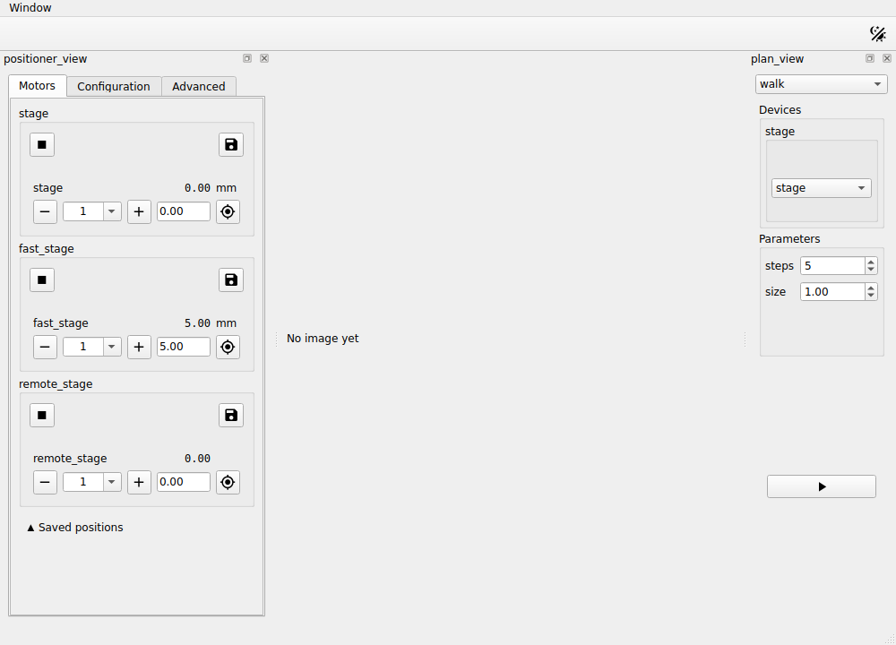

Reusing the built-in positioner¶
Sometimes you don't need to write a presenter or a view yourself, because
redsun already offers one. In this tutorial you replace the nudge presenter
and view of your session with the positioner redsun ships. It's a
stack (a presenter and a view written to
work together) that steps, moves and stops any stage, and saves positions to
go back to. It continues from
Putting a device behind a service.
Before you start¶
What you need
The project folder of Putting a device behind a service,
with first_session.py, stage_ioc.py and session.yaml.
The positioner works with any device that ophyd-async can move and that
reports its position as it changes. Your three stages already qualify, so you
don't change any of them. Since Writing your first session,
each one has been a StandardMovable, which gives it the set, locate,
stop and subscribe methods the positioner uses. The positioner replaces the
nudge presenter and view, and nothing else in the session.
Open first_session.py, and add these imports below the ones it has:
1. Remove the nudge presenter and view¶
Delete the classes StagePresenter and StageView. In the session, delete
the lines that declare stage_ctrl and stage_view, and the four links that
use them:
yield self.stage_view.sig_nudge, self.stage_ctrl.nudge
yield self.stage.position, self.stage_view.show_reading
yield self.fast_stage.position, self.stage_view.show_reading
yield self.remote_stage.position, self.stage_view.show_reading
That leaves three imports unused, Reading, QFormLayout and
QPushButton, so delete them as well.
2. Declare the positioner¶
The positioner's view docks on the right of the window, where the plan
controls already are. Since a view's class sets where it sits, the one thing
you write is a subclass that changes only its placement, to the left of the
window, which is free. Add it below ScanPlans:
Add the presenter and your view to the session, below scan_plans:
The presenter receives every device of the session, as StagePresenter
did, and keeps the ones it can move: the three stages, but not the camera.
When the session sets the view up, the view asks the presenter which stages
and axes there are, so it needs no list of its own.
3. Wire it¶
Add these links at the start of wire:
yield self.positioner_view.sig_move, self.positioner.move
yield self.positioner_view.sig_move_to, self.positioner.move_to
yield self.positioner_view.sig_stop_device, self.positioner.stop
yield self.positioner_view.sig_configure, self.positioner.configure
yield self.positioner.sig_readback, self.positioner_view.update_readback
yield self.positioner.sig_moving, self.positioner_view.set_moving
yield self.positioner.sig_failed, self.positioner_view.set_failed
yield self.positioner.sig_limits, self.positioner_view.update_limits
yield (
self.positioner.sig_configuration,
self.positioner_view.update_configuration,
)
The first four send what the user does to the presenter: a step, a move to a
typed position, a stop, or a change of configuration. The others send back
what the stages do: where they are, whether they're moving, why a move
failed, their limits and their configuration. These links are the same in
every session that uses the positioner, and
Move devices by hand lists them as well.
Because the presenter and the view were written for each other, one line,
yield from links_between(self.positioner_view, self.positioner), makes the
same links; How to offer a pairing explains
how.
4. Change the session file¶
session.yaml still gives a step to stage_ctrl, which the session no
longer declares. The session would report that entry as a component it failed
to build, so replace it. The positioner offers a choice of step sizes beside
each stage, and the file can say which sizes to offer:
5. Run it¶
Start the session:
Service 'stage_ioc' started
Services started: 1/1
Session built: 4/4 devices, 5/5 presenters, 3/3 views

Compare it with the window of the
last tutorial: the row of nudge buttons at the
bottom is gone, and the positioner on the left has a group for each of
stage, fast_stage and remote_stage. Each group shows where its stage
is, minus and plus buttons with a step size beside them, and a field where
you type a position to go to. Hold the plus button, and the stage keeps
stepping until you let go. Pointing at a button shows its name.
The Save button records where a stage stands in the Saved positions section, under a name you can change, and the Go button beside the saved entry moves the stage back there. The Advanced tab sets how fast a held button repeats. The Configuration tab lists the configuration a stage declares; yours declare none, so the tab says so.
The whole script
This script reads its session file from builtin_positioner.yaml, so
that the scripts of the earlier tutorials keep theirs. Yours reads
session.yaml.
"""The session built in the "Reusing the built-in positioner" tutorial."""
from __future__ import annotations
from collections.abc import Iterator, Mapping # noqa: TC003
from functools import cached_property
from typing import Annotated, Any, Protocol, runtime_checkable
from urllib.parse import urlsplit
from urllib.request import url2pathname
import bluesky.plan_stubs as bps
import bluesky.plans as bp
import h5py
import numpy as np
from bluesky.protocols import Readable, Triggerable
from bluesky.utils import MsgGenerator # noqa: TC002
from event_model import DocumentRouter, StreamResource
from ophyd_async.core import (
MovableLogic,
SignalRW,
StandardMovable,
StandardReadable,
soft_signal_rw,
)
from ophyd_async.epics.core import EpicsDevice, PvSuffix
from ophyd_async.sim import SimBlobDetector # noqa: TC002
from psygnal import Signal
from qtpy.QtGui import QImage, QPixmap
from qtpy.QtWidgets import (
QComboBox,
QLabel,
QStackedWidget,
QVBoxLayout,
QWidget,
)
from redsun import (
AsDevice,
AsPresenter,
AsService,
AsView,
CallbackType,
Declare,
DeviceMapping,
DevicesOf,
HasPlans,
Launch,
Link,
Placement,
PlanEntry,
slot,
)
from redsun.engine import RunEngine
from redsun.presenter import PositionerPresenter # noqa: TC001
from redsun.presenter.plan_spec import (
PlanSpec,
collect_arguments,
create_plan_spec,
resolve_arguments,
)
from redsun.qt import Central, Dock, QtSession
from redsun.view.qt.builtins import PositionerView
from redsun.view.qt.utils import PlanWidget, create_plan_widget
class MyStage(StandardReadable, StandardMovable[float]):
def __init__(self, name: str = "", *, units: str = "mm") -> None:
with self.add_children_as_readables():
self.position = soft_signal_rw(float, units=units)
super().__init__(name=name)
@cached_property
def movable_logic(self) -> MovableLogic[float]:
return MovableLogic(setpoint=self.position, readback=self.position)
class FastStage(StandardReadable, StandardMovable[float]):
def __init__(self, name: str = "", *, units: str = "mm") -> None:
with self.add_children_as_readables():
self.position = soft_signal_rw(float, initial_value=5.0, units=units)
self.speed = soft_signal_rw(float, initial_value=10.0)
super().__init__(name=name)
@cached_property
def movable_logic(self) -> MovableLogic[float]:
return MovableLogic(setpoint=self.position, readback=self.position)
class RemoteStage(EpicsDevice, StandardMovable[float]):
position: Annotated[SignalRW[float], PvSuffix("Position")]
@cached_property
def movable_logic(self) -> MovableLogic[float]:
return MovableLogic(setpoint=self.position, readback=self.position)
@runtime_checkable
class HasPosition(Protocol):
position: SignalRW[float]
@runtime_checkable
class Camera(Readable[Any], Triggerable, Protocol): ...
class StagePositioner(PositionerView):
placement: Placement = Dock("left")
class StagePlans:
def __init__(self, name: str) -> None:
self.name = name
def walk(
self, stage: HasPosition, steps: int = 5, size: float = 1.0
) -> MsgGenerator[None]:
for _ in range(steps):
position = yield from bps.rd(stage.position)
yield from bps.mv(stage.position, position + size)
def plan_map(self) -> Mapping[str, PlanEntry]:
return {"walk": {"plan": self.walk}}
class PlanPresenter:
sig_started = Signal(str)
sig_finished = Signal()
def __init__(self, name: str, *, devices: DeviceMapping) -> None:
self.name = name
self.devices = devices
self.engine = RunEngine()
self.plans: dict[str, PlanEntry] = {}
self.specs: dict[str, PlanSpec] = {}
def setup(
self,
plan_sources: Mapping[str, HasPlans],
callbacks: Mapping[str, CallbackType],
) -> None:
for component in plan_sources.values():
self.plans.update(component.plan_map())
for plan, entry in self.plans.items():
self.specs[plan] = create_plan_spec(entry["plan"], self.devices)
for callback in callbacks.values():
self.engine.subscribe(callback)
@slot
def run(self, plan: str, values: dict[str, Any]) -> None:
resolved = resolve_arguments(self.specs[plan], values, self.devices)
args, kwargs = collect_arguments(self.specs[plan], resolved)
self.sig_started.emit(plan)
future = self.engine(self.plans[plan]["plan"](*args, **kwargs))
future.add_done_callback(lambda _: self.sig_finished.emit())
class PlanView(QWidget):
placement: Placement = Dock("right")
sig_run = Signal(str, dict)
def __init__(self, name: str, parent: QWidget) -> None:
super().__init__(parent)
self.name = name
self.chooser = QComboBox()
self.pages = QStackedWidget()
self.chooser.currentIndexChanged.connect(self.pages.setCurrentIndex)
layout = QVBoxLayout(self)
layout.addWidget(self.chooser)
layout.addWidget(self.pages)
self.widgets: dict[str, PlanWidget] = {}
def setup(
self, plan_sources: Mapping[str, HasPlans], devices: DeviceMapping
) -> None:
for component in plan_sources.values():
for entry in component.plan_map().values():
self.add_plan(create_plan_spec(entry["plan"], devices))
def add_plan(self, spec: PlanSpec) -> None:
widget = create_plan_widget(
spec, run_callback=lambda: self.ask_to_run(spec.name)
)
self.widgets[spec.name] = widget
self.chooser.addItem(spec.name)
self.pages.addWidget(widget.group_box)
def ask_to_run(self, plan: str) -> None:
self.setEnabled(False)
self.sig_run.emit(plan, self.widgets[plan].parameters)
@slot
def on_finished(self) -> None:
self.setEnabled(True)
class CameraPresenter(DocumentRouter):
sig_frame = Signal(object)
def __init__(self, name: str, *, cameras: DevicesOf[Camera]) -> None:
super().__init__()
self.name = name
self.cameras = cameras
self.written: tuple[str, str] | None = None
def snap(self, camera: Camera, frames: int = 3) -> MsgGenerator[Any]:
return (yield from bp.count([camera], num=frames))
def plan_map(self) -> Mapping[str, PlanEntry]:
return {"snap": {"plan": self.snap}}
def stream_resource(self, doc: StreamResource) -> StreamResource:
if doc["data_key"] in self.cameras:
self.written = (doc["uri"], doc["parameters"]["dataset"])
return doc
@slot
def show_last(self) -> None:
if self.written is not None:
uri, dataset = self.written
with h5py.File(url2pathname(urlsplit(uri).path), "r") as file:
self.sig_frame.emit(file[dataset][-1])
self.written = None
class ImageView(QWidget):
placement: Placement = Central()
def __init__(self, name: str, parent: QWidget) -> None:
super().__init__(parent)
self.name = name
self.image = QLabel("No image yet")
QVBoxLayout(self).addWidget(self.image)
@slot
def show_frame(self, frame: object) -> None:
values = np.asarray(frame, dtype=float)
low, high = values.min(), values.max()
grey = (255 * (values - low) / max(high - low, 1.0)).astype(np.uint8)
height, width = grey.shape
image = QImage(
grey.tobytes(), width, height, width, QImage.Format.Format_Grayscale8
)
self.image.setPixmap(QPixmap.fromImage(image.copy()))
class ScanPlans:
def __init__(self, name: str) -> None:
self.name = name
def scan(
self,
stage: HasPosition,
camera: Camera,
start: float = 0.0,
stop: float = 5.0,
points: int = 6,
) -> MsgGenerator[Any]:
return (yield from bp.scan([camera], stage.position, start, stop, points))
def plan_map(self) -> Mapping[str, PlanEntry]:
return {"scan": {"plan": self.scan}}
class FirstSession(QtSession):
config = "builtin_positioner.yaml"
stage_ioc: Annotated[
AsService,
Launch("stage_ioc", ready="Server startup complete.", prefix="STAGE:"),
]
stage: AsDevice[MyStage]
fast_stage: AsDevice[FastStage]
remote_stage: Annotated[AsDevice[RemoteStage], Declare(service="stage_ioc")]
camera: AsDevice[SimBlobDetector]
stage_plans: AsPresenter[StagePlans]
plan_ctrl: AsPresenter[PlanPresenter]
camera_ctrl: AsPresenter[CameraPresenter]
scan_plans: AsPresenter[ScanPlans]
positioner: AsPresenter[PositionerPresenter]
positioner_view: AsView[StagePositioner]
plan_view: AsView[PlanView]
image_view: AsView[ImageView]
def wire(self) -> Iterator[Link]:
yield self.positioner_view.sig_move, self.positioner.move
yield self.positioner_view.sig_move_to, self.positioner.move_to
yield self.positioner_view.sig_stop_device, self.positioner.stop
yield self.positioner_view.sig_configure, self.positioner.configure
yield self.positioner.sig_readback, self.positioner_view.update_readback
yield self.positioner.sig_moving, self.positioner_view.set_moving
yield self.positioner.sig_failed, self.positioner_view.set_failed
yield self.positioner.sig_limits, self.positioner_view.update_limits
yield (
self.positioner.sig_configuration,
self.positioner_view.update_configuration,
)
yield self.plan_view.sig_run, self.plan_ctrl.run
yield self.plan_ctrl.sig_finished, self.plan_view.on_finished
yield self.plan_ctrl.sig_started, self.path_provider.set_plan
yield self.plan_ctrl.sig_finished, self.path_provider.reset_plan
yield self.plan_ctrl.sig_finished, self.camera_ctrl.show_last
yield self.camera_ctrl.sig_frame, self.image_view.show_frame
if __name__ == "__main__":
FirstSession().run()
What you built¶
You replaced the nudge presenter and view of your session with the
positioner redsun ships. You declared and wired its presenter and view, but
didn't write them, apart from the line that says where the view sits.
Next steps¶
- Move devices by hand covers the positioner's options, and how to change its behaviour in a subclass.
- Write a component is the place to start when no built-in component does what you need.